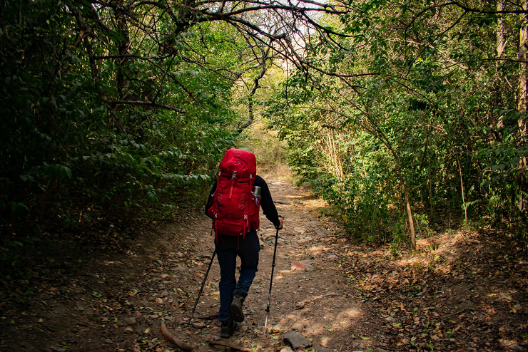
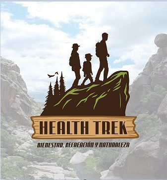
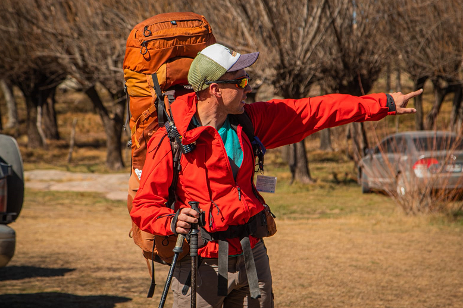
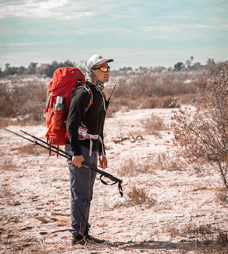
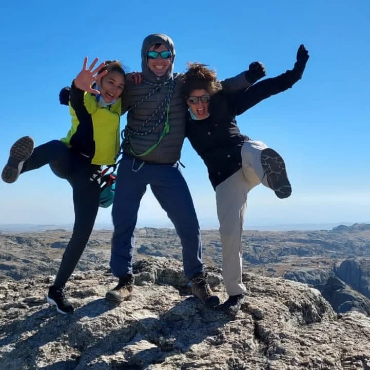
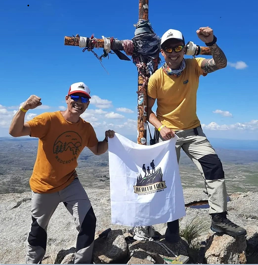
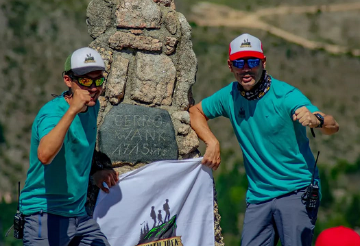
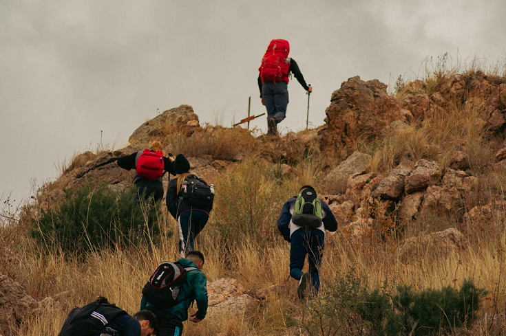
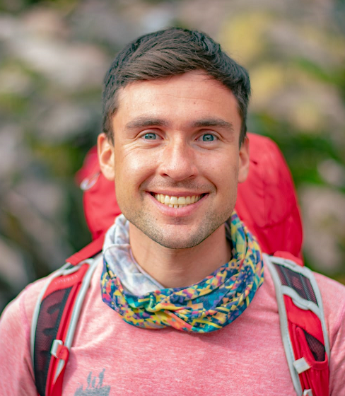

“Docente y montañista, pasión por la enseñanza, salud y vida en la naturaleza”.
Propuestas
Health trek
Junto con el Lic. Carlos Goncebat
Desarrollo de experiencias en el medio natural a traves del trekking como practica corporal, educativa y regional.
En el Sendero
Junto con las Lic. Agus y Juli
Te invitamos a conocer las sierras de Cordoba de una manera saludable y activa
Imagenes
     Experiencias
Bibliografia
Javier Bernardo Sanchez Ramirez
Nací y me crié en un pueblo llamado Juan. B. Alberdi (Prov. de Buenos Aires) hasta las 18 años, luego continué mis estudios en la ciudad de Junin, donde me gradué de Profesor de Educación Física, Guardavidas y Acompañante Terapéutico. Ya con 24 años y finalizado mis objetivos, conocí la montaña😍, donde mi vida dio un giro: sabía lo que me apasionaba. Me mudé a Villa Carlos Paz, solo a estudiar lo que había descubierto: Guía de Montaña. Durante el 2019 comienzo el ingreso a la UNC, en el profesorado de Ciencias Biológicas. En el año 2021 me graduó de Licenciado en EF, finalizando el trabajo final a modo de tesis denominado "el trekking como contenido en el profesorado de EF" (post tesis: comienzo de HEALTTREK CÓRDOBA). Ese mismo año defiendo mi curriculum de montaña y finalizo mi carrera de Guía. A principios del 2022, recibo mi certificación como "Diplomado en Gestión del Turismo Sostenible", y aún nuevos proyectos de estudiante siguen encaminados. Hoy a mis 29 años, me propuse recorrer montañas por Argentina, y a través de este espacio es donde voy a compartir estas experiencias🗻
